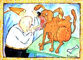

PET CONCERNS
ON ONE LEVEL, CONDUCTING AN Annual physical is the easiest of all veterinary procedures. Really getting it right, though, may be one of the most difficult tasks facing the professional animal health expert.
The "Routine" Physical
The easy part of a routine exam is the trip from the tip of the tail to the point of the nose (or vice versa) over the pet's body. In its shortest form, that's all an animal physical involves. A practiced eye, with the help of trained hands and a sensitive nose, can quickly move over a critter's body from one end to the other and spot any glaring abnormalities. All one needs is a good idea of what "normal" looks, smells and feels like. Piece of cake. You don't need years of training to give such an exam, so why pay good money to have a vet do it? Instead, take the time to learn how to do it yourself.
Once you know what normal is, you can spot anything abnormal that needs fixing. For example, how do healthy teeth look? Well, they should be a glistening white, there should be no areas coated with brownish or greyish calculus, and the gums should be a uniform pink with no dark red inflamed areas. When you check your pet's teeth, learn how to peel the upper and lower lip away from the teeth so you can see the molars that lie far to the rear of the mouth. Also learn how to open your pet's mouth so you can see the inside surfaces of all the teeth, including those way in the back.
While you're looking, be sure to note any abnormal odors. What do a normal skin and hair coat look like? A critter in good health will have a certain bloom to its fur. There will, of course, be no patchy areas where hair has fallen out, and the coat will have a rather pleasant smell.
Fleas are easy to spot as they scurry to cover, and you'll soon learn to recognize the little, dark "flea dirt" leavings that give the buggers away. Also, while you're looking at the coat, run your fingers over the animal's entire body. Once you've done this a few times, you'll be able to tell the normal lumps and bumps from any that may indicate early signs of disease. You can also do a fair job of checking your pet's ears, even though you don't own an oto scope. Just by looking closely, you'll be able to examine most of the outer ear. And you can get a partial "look" into the inner ear by wiping the canal with a large hunk of cotton and seeing what appears. (It should normally come out clean and odorless.)
Also, you can use your nose to snoop for foul-smelling odors that indicate infection. Get right down to the inner flap and take a good whiff. After a couple of ears, normal and infected, you'll easily be able to tell the difference. You get the idea. Use your senses-sight, smell and touch-on a routine basis to determine if your pet's normal. If any evidence of disease seems to be present, it's time to visit the vet. Speaking of time, this kind of homestead physical should be done more often than once a year-once a month, at the least, or, better yet, weekly.
The In-Depth Holistic Physical
OK, you might ask, so if I'm giving my pet a weekly physical exam, do I really need to pay a veterinarian for an annual physical? Yes; absolutely. A professionally trained eye can see more than yours, although you'll get pretty good at the exam yourself with time. What's more, the annual physical is an opportunity to update vaccinations and conduct other important routine procedures, such as the check for heart worm.
But be sure the vet gives you your money's worth. You should expect more from your vet than just a quick once-over. Your pet should get a complete examination. That means that the vet should, at the least, spend time to look into the pet's ears with an otoscope, check its eyes with an ophthalmoscope and listen to the heart with a stethoscope. Here's a list of other things I believe should be part and parcel of an annual physical.
1. All routine screening tests, including those for internal parasites, for heartworm (in dogs) and for feline leukemia virus. (Hint: Bring a fresh fecal sample with you. The fecal exam is quick and inexpensive, and the only way to determine the presence of internal parasites.)
2. An in-depth discussion of your pet's diet and nutrition, including suggestions for changes or supplements if the vet deems them necessary.
3. A discussion or questionnaire to determine stress levels in the pet's household. Stress is a killer, and you or your lifestyle may be contributing an inordinate amount of stress to your pet. Your vet should also be concerned with the amount of love and attention your pet gets daily. . . . any glaring abnormalities?
4. A discussion of the exercise your pet gets. If stress is a killer, exercise is a lifesaver.
5. Inquiry regarding the pet's behavior. An animal will often act differently long before it shows signs of disease, so your vet should ask how Pooch or Pussy has been behaving.
The Physical for Older Pets
Once a pet has reached a certain age-for example, when a dog is about seven years old-I like to give some tests that help tell me just how fast the animal is aging internally. With the results, I can determine whether the old guy may need some specific vitamin supplement, for instance. Or he may need to cut back a bit on his daily exercise.
The tests I might recommend for older pets include a urinalysis and a series of blood chemistries to evaluate organ function. I may also want to see a chest x-ray, and perhaps give a more involved stress test to determine cardiac and lung function. The specific tests will vary somewhat with the general condition of the pet (and with consideration for the owner's finances).
So there you have my feelings on what an adequate annual physical exam is: careful, comprehensive, holistic, taking into account all the factors that can affect an animal's well being. To my way of thinking, you shouldn't expect or settle for less. The other side of the story, of course, is that this type of in-depth exam doesn't come cheap.
A really thorough physical takes time, and time comes at a price. Is it worth it? Only you can decide, but it's been my experience that a really complete physical exam is, in the long run, a money saver-and one that can give your pet a better (and perhaps longer) life.
Randy Kidd is a Kansas-based veterinarian and a long-time contributor toMother Earth News.
|
 |
|
|